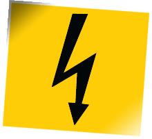

Electric Shock or Burn Equipment
Electric shock and burn safety equipment is required for controlled areas where frequencies are below 30 MHz, which is where electric burns are the primary hazard. Examples of these controls include: